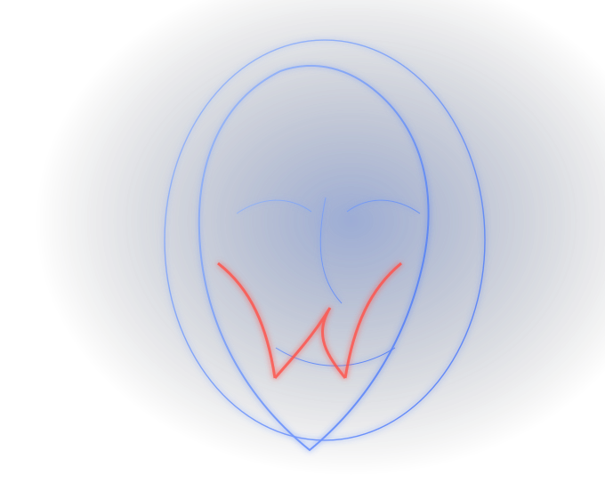

Modelos y prototipos
Diseño de modelos anatómicos, piezas parciales, biomodelos y simuladores personalizados.
↗Tecnología. Anatomía. Educación. Sin límites.
Desarrollamos modelos, simuladores y experiencias de aprendizaje para explorar, comprender y entrenar sobre anatomía con mayor realismo, seguridad y aplicación.

Modelos anatómicos hiperrealistas y soluciones tridimensionales.
→ 02Sistemas para entrenamiento clínico, procedimental y educativo.
→ 03Formación para universidades, docentes y profesionales de la salud.
→ 04Investigación aplicada, prototipado y transferencia tecnológica.
→Anatomy Lab nace para convertir conocimiento anatómico en experiencias tangibles. Integramos anatomía, simulación, imagenología, modelado 3D, educación e ingeniería para crear herramientas relevantes para la formación en salud.
Nuestro primer sistema se orienta al aprendizaje de la anatomía facial y al entrenamiento de procedimientos. El concepto integra estructuras diferenciables, trayectos anatómicos y una respuesta táctil progresivamente validable.
Plataforma física y digital para enseñar relaciones anatómicas, identificar zonas críticas y practicar sobre un entorno controlado antes de intervenir pacientes.
La fase de lanzamiento se concentra en proyectos realizables y alianzas estratégicas. Cada solución puede iniciar como prototipo, experiencia educativa o desarrollo aplicado.
Diseño de modelos anatómicos, piezas parciales, biomodelos y simuladores personalizados.
↗Laboratorios, talleres, integración curricular y actividades para aprendizaje anatómico aplicado.
↗Mapeo anatómico, ecografía, reconstrucción digital, validación y desarrollo de conceptos.
↗Co-desarrollo con universidades, centros de simulación, empresas y grupos de investigación.
↗Anatomía, ecografía, reconstrucción 3D, análisis de datos e ingeniería convergen para convertir preguntas científicas en herramientas útiles para enseñar y entrenar.
Anatomy Lab es liderado por Duarte & Barros e integra experiencia clínica, docencia universitaria, investigación anatómica, innovación pedagógica y tecnologías biomédicas.
Odontólogo especialista en Operatoria Dental Estética y maestrando en Ingeniería Biomédica. Docente universitario y conferencista con más de 12 años de experiencia, orientado al desarrollo de simulación y tecnologías diagnósticas.
Médico-cirujano, docente de Anatomía e Histología y maestranda en Ciencias Básicas Biomédicas con énfasis en Morfofisiología. Investigadora principal en vascularización facial mediante ecografía Doppler.
Médico, docente de Morfología e investigador. Doctor en Medicina y Cirugía, magíster en Educación y magíster en Investigación Biomédica, con trayectoria en enseñanza anatómica e innovación pedagógica.
Para proyectos con universidades, centros de simulación, instituciones de salud, grupos de investigación, empresas tecnológicas o posibles distribuidores.